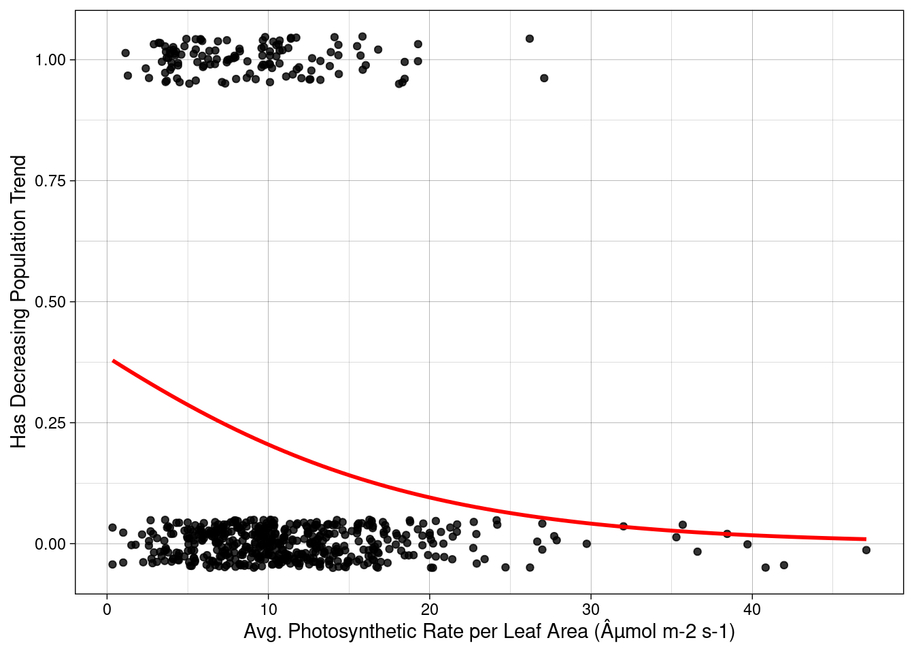

source(file.path("data_fetch.R"))Predicting plant population trends from photosynthetic rate and threats
Project Overview
Motivation
Climate change and human activity are significant factors that threaten species populations. Nearly 40% of plant species are threatened worldwide, and even more are predicted to become threatened as effects of climate change and human activity continue. Many plant species that are threatened or endangered are not very resilient to conditions outside of their niche, often due to their physiological traits, such as carbon fixation.
C4 and CAM plants have a more efficient carbon fixation process and are generally more photosynthetically-efficient than C3 processes. Plants with high photosynthetic efficiency are often economically important as crops and more resilient to harsh environments. Interestingly, cacti, which usually are CAM plants, are one of the most threatened groups of plants, despite their high photosynthetic efficiency.
There are many other factors that affect a species’ population trend, but in this project, I am interested in using photosynthetic rates and ecological threats to try to predict a plant’s population trend.
Data & Methods
Photosynthetic rate data was obtained from the BIEN R package. The Botanical Information and Ecology Network (BIEN) was developed by collaborating ecologists at the National Center for Ecological Analysis and Synthesis (NCEAS). The BIEN database contains a variety of information ranging from phylogeny data to species distribution. To determine population trend and if a species is threatened by climate change or human activity I obtained data from the IUCN Red List. Climate threats include habitat shifts, droughts, temperature extremes, storms & flooding, and other impacts not defined by the IUCN. Human threats include housing & urban areas, commercial & industrial areas, tourism & recreation areas, recreational activities, war & civil unrest, and work & other activities.
To analyze my data I ran a logistic regression model. I used Increasing/Stable (0) and Decreasing (1) as the categorical binary response variable on average photosynthetic rare per leaf area, climate threatened, and human threatened.
Data Preparation
Data was prepared in the data_fetch.R script. Data from BIEN was cleaned and joined with data from the IUCN Red List entries for species in the kingdom Plantae. Species that had an increasing or stable population trend were assigned a binary variable of 0 and those who had a decreasing population trend were assigned a binary variable of 1.
Data Exploration
ggplot(join, aes(x = avg_photo)) +
geom_histogram(fill = "seagreen", color = "black") +
theme_linedraw() +
labs(x = "Avg. Photosynthetic Rate per Leaf Area (µmol m-2 s-1)")
ggplot(data = join, aes(x = avg_photo, y = pop_trend)) +
geom_jitter(width = 0, height = 0.05, alpha = 0.8) +
theme_linedraw() +
labs(x = "Avg. Photosynthetic Rate per Leaf Area (µmol m-2 s-1)",
y = "Population Trend")
clim_plot <- ggplot(clim_human_res, aes(x = climate_threatened)) +
geom_bar(width = 0.5, fill = "seagreen", color = "black") +
theme_linedraw() +
labs(x = "Climate threatened?")
human_plot <- ggplot(clim_human_res, aes(x = human_threatened)) +
geom_bar(width = 0.5, fill = "seagreen", color = "black") +
theme_linedraw() +
labs(x = "Human threatened?", y = "")
clim_plot + human_plot
Analysis
Logistic Regression
\[\operatorname{logit}(p)=\log \left(\frac{p}{1-p}\right)=\beta_0+\beta_1 (Photosynthetic Rate) +\varepsilon \]
# binary resp glm plot
ggplot(join, aes(x = avg_photo, y = pop_trend_binary)) +
geom_jitter(width = 0, height = 0.05, alpha = 0.8) +
geom_smooth(method = "glm", se = FALSE, color = "red",
method.args = list(family = "binomial")) +
theme_linedraw() +
labs(x = "Avg. Photosynthetic Rate per Leaf Area (µmol m-2 s-1)",
y = "Has Decreasing Population Trend")
# model
mod_photo <- glm(pop_trend_binary ~ avg_photo,
data = join,
family = "binomial") # binomial dist; prob of 1 and 0 over many trials
# model table
sjPlot::tab_model(mod_photo,
transform = NULL,
pred.labels = c("Intercept", "Avg. Photosynthetic Rate (µmol m-2 s-1)"), # predictor labels
show.p = TRUE, # include p-val
p.style = c("numeric_stars"),
p.threshold = c(0.10, 0.05, 0.01),
dv.labels = c("log Probability of Decreasing Population"),
string.p = "p-value",
show.r2 = FALSE,
title = "Logisitc Regression Model Results for Photosynthetic Rate",
digits = 3)| log Probability of Decreasing Population | |||
|---|---|---|---|
| Predictors | Log-Odds | CI | p-value |
| Intercept | -0.464 ** | -0.907 – -0.016 | 0.041 |
| Avg. Photosynthetic Rate (µmol m-2 s-1) | -0.089 *** | -0.133 – -0.048 | <0.001 |
| Observations | 609 | ||
| * p<0.1 ** p<0.05 *** p<0.01 | |||
A 1 unit increase in photosynthetic rate indicates a 0.089 decrease in probability of having a decreasing population trend.
This model tells us:
\[ \operatorname{logit}(\hat p)=\log \left(\frac{\hat p}{1-\hat p}\right)=-0.464-0.089 x \]
Odds Ratio
By how much does the model predict that the odds of having a decreasing population will change with each additional unit in photosynthetic rate?
\[ \operatorname{odds}(\hat{p})=\frac{\hat{p}}{1-\hat{p}}=\exp \left(\hat{\beta}_0+\hat{\beta}_1 \cdot x\right) \]
exp(mod_photo$coefficients[2])avg_photo
0.9146572 The model estimates that one additional unit in photosynthetic rate is associated with a change in the odds ratio of \(e^{-0.089} = 0.915\), or a 8.9% decrease in the odds of having a decreasing population.
# compute odds hat var
photo_fitted <- mod_photo %>%
augment(type.predict = "response") %>%
mutate(y_hat = .fitted) %>%
mutate(odds_hat = y_hat / (1 - y_hat)) # y_hat is p
# plot
ggplot(photo_fitted, aes(x = avg_photo, y = odds_hat)) +
geom_point(size = 1) +
geom_line() +
scale_y_continuous("Log-odds of being threatened") +
labs(x = "Avg. Photosynthetic Rate (µmol m-2 s-1)") +
theme_linedraw()Logistic Model
This first model only considered photosynthetic rate, but now we want to add in if the species is threatened by climate change or human activity, since both of these historically have contributed to plant species becoming threatened.
mod <- glm(pop_trend_binary ~ avg_photo + climate_threatened + human_threatened,
data = clim_human_res,
family = "binomial")
exp(coef(mod)) (Intercept) avg_photo climate_threatenedyes
0.6314813 0.8959289 4.2980568
human_threatenedyes
2.5251016 mod$coefficients[2] avg_photo
-0.1098942 tab_model(mod,
transform = NULL,
pred.labels = c("Intercept", "Average Photosyntheitc Rate (µmol m-2 s-1)",
"Climate Threatened", "Human Threatened"),
p.style = c("numeric_stars"),
p.threshold = c(0.10, 0.05, 0.01),
show.p = TRUE,
string.p = "p-value",
dv.labels = c("log Threat Pobability"),
show.r2 = FALSE,
title = "Logisitc Regression Model Results for Photosynthetic Rate, Climate Threatened, and Human Threatened",
digits = 3)| log Threat Pobability | |||
|---|---|---|---|
| Predictors | Log-Odds | CI | p-value |
| Intercept | -0.460 * | -0.922 – 0.004 | 0.051 |
| Average Photosyntheitc Rate (µmol m-2 s-1) | -0.110 *** | -0.158 – -0.065 | <0.001 |
| Climate Threatened | 1.458 *** | 0.665 – 2.237 | <0.001 |
| Human Threatened | 0.926 | -0.299 – 2.210 | 0.145 |
| Observations | 609 | ||
| * p<0.1 ** p<0.05 *** p<0.01 | |||
From this model we can conclude that plants threatened by climate factors have their odds of having a decreasing population increase by a factor of 4.29, while those threatened by human factors have their odds increase by a factor of 2.52. We can also see that photosynthetic rate does still have an effect on population trend. Based on this model, the odds of having a decreasing population trend fall by about 10% for each unit increase in photosynthetic rate.
Making Probalistic Predictions
There are many species from the BIEN data that are not present on the IUCN Red List. Here, I am using my model to make out-of-sample predictions. To do this, I’ll need to pull of the model coefficients and create a function with inputs for the coefficients, photosynthetic rate, if it is threatened by climate change, and if it is threatened by human activities.
# p1 <- data.frame(avg_photo = 47.06767, climate_threatened = "no", human_threatened = "no")
# augment(mod, newdata = p1, type.predict = "response")
#
# p2 <- data.frame(avg_photo = 0.34, climate_threatened = "yes", human_threatened = "yes")
#
# augment(mod, newdata = p2, type.predict = "response")
#
# augment(mod, newdata = p1, type.predict = "response")
# coefficients
b0 <- mod$coefficients[1] #Intercept
b1 <- mod$coefficients[2] #photo
b2 <- mod$coefficients[3] #climate
b3 <- mod$coefficients[4] #human
# Function for testing probabilities
threat_prob <- function(b0, b1, b2, b3, photo, climate, human) {
equation <- b0 + b1 * photo + b2 * climate + b3 * human
prob <- (exp(equation)) / (1 + exp(equation))
print(prob)
}
# Testing probabilities for species with the highest and lowest photosynthetic rates
threat_prob(b0, b1, b2, b3, 47.06767, 0, 0) # for highest photosynthetic rate in data(Intercept)
0.003568093 threat_prob(b0, b1, b2, b3, 0.34, 1, 1) # for lowest photosynthetic rate in data(Intercept)
0.868458 # Predictions for plants not listed on IUCN red list
# find plants not on red list with the lowest photosynthetic rates
lpr_pred_low <- anti_join(lpr_summary, redlist) %>%
arrange(desc(avg_photo)) %>%
tail(5)
lpr_pred <- anti_join(lpr_summary, redlist) %>%
arrange(desc(avg_photo)) %>%
head(5) %>%
rbind(lpr_pred_low)
# binary climate and human values come from literature search
pred_cols <- data.frame(climate_threatened = c(0,0,1,1,0,1,0,1,1,0),
human_threatened = c(0,0,0,0,1,0,0,1,0,0))
lpr_pred <- cbind(lpr_pred, pred_cols)
for (i in seq_along(lpr_pred$scientific_name)) {
lpr_pred$y_hat[i] <- threat_prob(b0, b1, b2, b3,
lpr_pred$avg_photo[i],
lpr_pred$climate_threatened[i],
lpr_pred$human_threatened[i])
}lpr_pred %>%
arrange(desc(avg_photo)) %>%
kbl(linesep = "", booktabs = TRUE, col.names = c("Speices", "Photosynthetic Rate", "Climate", "Human", "ˆy")) %>%
kable_styling(bootstrap_options = c("striped", "condensed"),
latex_options = c("striped", "hold_position"), full_width = TRUE)| Speices | Photosynthetic Rate | Climate | Human | ˆy |
|---|---|---|---|---|
| Psammochloa villosa | 65.05000 | 0 | 0 | 0.0004961 |
| Helianthus neglectus | 48.72300 | 0 | 0 | 0.0029764 |
| Helianthus niveus | 46.74867 | 1 | 0 | 0.0156898 |
| Glaux maritima | 43.00000 | 1 | 0 | 0.0235000 |
| Helianthus cusickii | 42.24100 | 0 | 1 | 0.0151357 |
| Gouania lupuloides | 0.70820 | 1 | 0 | 0.7151743 |
| Serjania mexicana | 0.68560 | 0 | 0 | 0.3693444 |
| Clematis florida | 0.61000 | 1 | 1 | 0.8650312 |
| Passiflora vitifolia | 0.51340 | 1 | 0 | 0.7195148 |
| Cissus erosa | 0.43180 | 0 | 0 | 0.3758644 |
Thoughts and Conclusions
- do these results support your hypothesis, why or why not
- discuss uncertainty (std error)
- discuss limitations